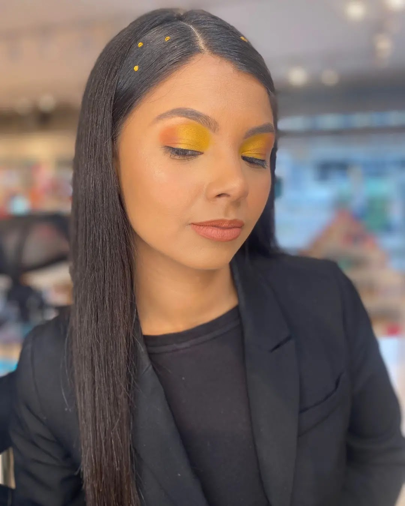

SOBRE NOSOTROS
Hola, me presento, mi nombre es Geraldine Benavente, mejor conocida como Yeya, soy estudiante de Derecho y Maquilladora profesional. El mundo de la belleza siempre me ha gustado, solo que no le había dado la atención necesaria. Desde que llegué a Uruguay, en el año 2018, de un dia para otro despertó una chispa en mi, en estudiar maquíllaje profesional, después de indagar en varias escuelas, me decidí por la mejor, Glow Makeup Studio, donde me prepare y fue una de las mejores experiencias que he vivido. También he realizado otros cursos: Automaquillaje, Como dictar cursos de maquillaje, colorimetría, entre otros. El mundo de la belleza, es muy amplio, dónde te da la oportunidad de seguir estudiando y preparándote, para cada día ser mejor. Recordemos siempre que nuestra mayor competencia somos nosotros mismo, así que siempre hacia adelante y seguir creciendo.

Actualmente tengo cinco años viviendo en Uruguay, llegue al país en el año 2018, cuando decidimos mi pareja y yo, salir de nuestro país Venezuela, por la situación económica que presenta.
Mi amor hacía el mundo de la belleza comenzó hace mucho tiempo atrás, solo que no le había dado la importancia que le di hasta que llegue a Uruguay. Después que se despertó esa chispa en estudiar maquíllaje profesional, entre tantas búsquedas de escuelas, me decidí por la mejor, Glow Makeup Studios, dónde estuve estudiando durante cuatro meses, con mi querida profesora, Betina Acevedo y un grupo de compañeras, que sin duda, hicieron una experiencia increíble. Dónde las conversaciones, compartir y risas siempre estuvieron presentes.
Estudiar maquíllaje profesional, me hizo amar más este mundo, un mundo lleno de crecimiento y conocimientos, increíbles. El maquillaje, para mí, es demostrar y resaltar más allá la belleza, el autoestima, el carisma y dar a demostrar, que no solo es aplicar un producto, es estudiar, investigar, indagar e ir más allá de lo cotidiano. Es regalar un sin fin de momentos, que cada día nos hacen crecer y ser mejores.
Además, de ser Maquilladora profesional, también he realizado cursos de alisados y progresivos, dónde esté curso también me dió a demostrar lo importante que es tener un cabello hermoso, cuidado y utilizando los productos adecuados para siempre lucir más hermosas.
Sumando más a mis conocimientos, también me forme en el mundo de las cejas, eso que se dicen que es el marco del rostro. Dónde define nuestra mirada.
Por otra parte, estudie colorimetría, que me hizo ir más allá y ver desde otro punto de vista el maquillaje, dónde aprendí más a profundidad la aplicación correcta de los colores dependiendo de cada necesidad, abarcando así también, las combinaciones que se presenten.
Por último, me prepare también en el ámbito de como dictar cursos de automaquillaje, de ir a la necesidad de cada persona, buscando así, la solución a cada situación. Pero esto no termina aquí, me seguiré preparando cada día, para ser mejor y brindar mejores servicios y aprendizaje al Estilo Yeya💜🙏